Program Organizing Committee (POC)
| 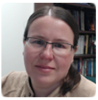 | Kathleen Labrie, Chair (Gemini) kathleen.labrie@noirlab.edu Kathleen is an Observatory Scientist at Gemini Observatory. She has been involved with the development of the Gemini data reduction software since she joined Gemini in 2003. Her involvement has been at all level, from developer, to manager, and also as a user through her personal astronomical research endeavours. |
| 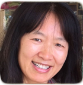 | Xiuqin Wu Deputy chair (IPAC) xiuqin@ipac.caltech.edu Xiuqin Wu is working at IPAC, Caltech. She is the task lead for NED, the NASA/IPAC Extragalactic Database. Prior to joining NED, Xiuqin was task lead for the Science User Interface and Tools (SUIT) team of Large Synoptic Survey Telescope (LSST), led the Uplink team for Spitzer Science Center, and was the lead for user interface group in the NASA/IPAC Infrared Science Archive (IRSA) at IPAC Caltech. |
| 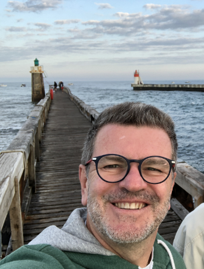 | Christophe Arviset (ESA-ESAC) Christophe.Arviset@esa.int Christophe Arviset is the Head of the Data Science and Archives Division, within the Science and Operations Department of ESA’s Directorate of Science at the European Space Astronomy Centre (ESAC) in Spain, close to Madrid. This includes the ESAC Science Data Centre, hosting data archives of more than 20 ESA space science missions, various data science activities in this context, as well as responsibility of technical IT infrastructure and services for the Directorate. He has been playing an active part of international data alliances (International Virtual Observatory Alliance, International Planetary Data Alliance and International Heliophysics Data Environment Alliance) since their creation. He had been chairing the IVOA over 2014-2016 and the IPDA over 2019-2021. Initially Computer Science engineer by training, he has developed more than 25 years of experience in science operations with special focus on science data management, data archives, long term data preservation in the context of international collaboration. |
| 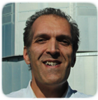 | Pascal Ballester (ESO) pballest@eso.org Pascal Ballester is Head of the Science Operations Software Department at the European Southern Observatory. He joined ESO in 1990, to integrate the Image Processing Group for the development of instrument-related software in MIDAS. He coordinated several projects for the Very Large Telescope, including data reduction software for the high-resolution spectrograph UVES of the Very Large Telescope, the ESO Exposure Time Calculators, and Data Flow System for the VLT Interferometer. As of 2007, he led the ESO Pipeline Systems Department, responsible for the development of data reduction software and observation preparation models for the VLT and ALMA facilities. Since 2014, he is Head of the Science Operations Software Department, providing software development and engineering support to the ESO Programmes, mainly Paranal Instrumentation, VLT and ALMA science operations, and ELT programme. |
| 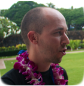 | Sébastien Derrière (CDS/France) sebastien.derriere@astro.unistra.fr Sébastien is an astronomer at CDS (Observatoire astronomique de Strasbourg). He has been working on Virtual observatory projects for many years, with a special interest in standardization of metadata and semantics (Unified Content Descriptors, Units, vocabularies and ontologies). He is also working on catalogue cross-matching, and the development of astronomical portals (for the CDS and in the ASTRODEEP project). Sébastien is also in charge of communication at the Strasbourg observatory, and is spending a significant fraction of his time on user support and education and public outreach activities. |
| 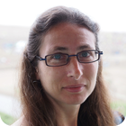 | Kimberly DuPrie (STScI) kduprie@stsci.edu Kimberly is a Principal Software Engineer at the Space Telescope Science Institute where the focus of her work is the deep archive for multiple missions including HST, Kepler, TESS and JWST. She is also the associate editor of the Astrophysics Source Code Library. Prior to STScI she worked in the financial industry in Tokyo and New York, and at the Harvard-Smithsonian Center for Astrophysics where she helped develop the Chandra archive. |
| 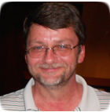 | Mike Fitzpatrick - POC Exec (NOAO) mike.fitzpatrick@noirlab.edu Mike is a Principal Software Systems Engineer at NOAO, beginning his career with the IRAF Project in 1988. Since then, he has been involved in a wide range of observatory projects involving data analysis, acquisition and transport, Virtual Observatory application development and ongoing support for the IRAF system. He is currently the Lead Developer and System Architect for the NOAO Data Lab project. |
| 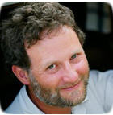 | Stephen Gwyn (CADC) gwyn.cadc@gmail.com Stephen works as a data specialist at the Canadian Astronomy Data Center. He has developed MegaPipe a pipeline to handle data from MegaCam on CFHT and WIRwolf for data from WIRcam, also on CFHT. He also designed the Solar System Object Image Search service at the CADC. |
| 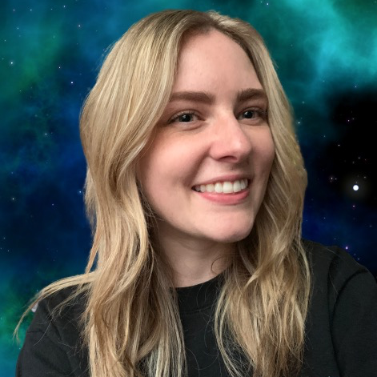 | Alice Jacques (NOIRLab) alice.jacques@noirlab.edu Alice Jacques is a Data Analyst in the Astro Data Lab at NOIRLab, Tucson, AZ, USA. She joined the Astro Data Lab team as a Data Analyst in 2020 after completing her Master's degree in Physics from the University of Louisville. She has expertise in extragalactic astronomy research and in Python programming. Alice is currently one of the lead analysts in charge of ingesting new data sets into Data Lab and has ingested surveys such as DES DR2, LSST SIM DR2, SkyMapper DR2, SPLUS DR2, and VHS DR5. Another area of specialty is the Data Lab cross-matching capabilities, including the creation and maintenance of cross-matched tables with core reference datasets to enhance the scientific value of the Data Lab data holdings. She brings a combination of scientific, technical, and information synthesis skills. |
 |
Brian Kent (NRAO) bkent@nrao.edu Brian Kent is a scientist with the NRAO in Charlottesville, Virginia, USA. He is interested in 3D data visualization and studying nearby galaxies. His efforts at the NRAO include working with their data reduction pipeline software, the Very Large Array Sky Survey, and educating students about radio astronomy and data science through NRAO's international exchange program, aiming to broaden participation in astronomy and computing. |
| 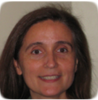 | Nuria Lorente (AAO) nuria.lorente@aao.gov.au Nuria Lorente is currently working with the Australian Astronomical Observatory. Her 20-year career has taken her around the world, from the Australia Telescope National Facility (now CSIRO Astronomy and Space Science), to Jodrell Bank Observatory, the Astronomy Technology Centre in the UK and the National Radio Astronomy Observatory in the USA. She has a wide range of experience in astronomical software for both optical and radio observatories, and and has particular interests in data simulation, source-finding algorithms, and the development of computing and software engineering within the astronomical community. Nuria feels fortunate to have worked with some very talented people and on a number of interesting projects and instruments, including ALMA, JWST/MIRI, VISTA, MERLIN, ATCA and currently SAMI and TAIPAN. |
| 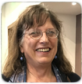 | Jessica Mink (SAO) Jessica works at the Harvard-Smithsonian Center for Astrophysics at SAO's Telescope Data Center, writing and using data reduction, analysis, and archiving software for spectra of stars and galaxies taken with several spectrographs on our ground-based telescopes. She has written the IRAF RVSAO radial velocity analysis package and the widely-used WCSTools package which connects pixel and sky positions of digital images of the sky, uses source catalogs, and manipulates FITS images. |
| 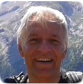 | Fabio Pasian (INAF) fabio.pasian@inaf.it Fabio is a senior astronomer at INAF-OATS where he leads a group composed of over 30 scientists and engineers involved, mostly in the framework of international projects, in the development of computer applications for astrophysics (control of scientific instrumentation, distributed computing, data processing and archiving, and the astronomical Virtual Observatory). Currently he is Co-I of Planck, and a member of the Project Office of the Science Ground Segment for the Euclid mission. |
| 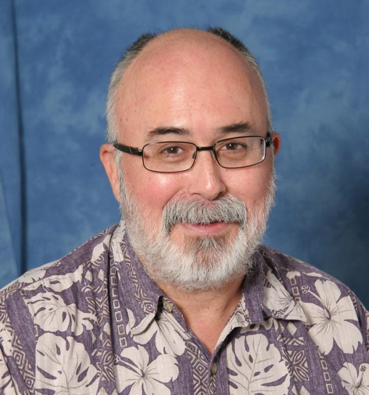 | Bob Seaman (U.Arizona) rseaman@arizona.edu Rob Seaman is the Data Engineer and a Co-investigator for the Catalina Sky Survey (CSS) of the Lunar and Planetary Laboratory at the University of Arizona. Using multiple survey and follow-up telescopes in Arizona and Australia, CSS has discovered nearly half of all near-Earth asteroids, including three impactors and two mini-moons. Rob serves as chair of the IAU Time Domain working group and co-chairs the SPIE Observatory Operations conference. His diverse interests include archiving, rapid transient response, data compression (FPACK), and timekeeping in astronomy. |
Yuji Shirasaki (NAOJ) yuji.shirasaki@nao.ac.jp Yuji Shirasaki is an observational astrophysicist at NAOJ. He received his PhD degree in 1997 for study of chemical composition of primary cosmic ray. After that he was involved in a GRB mission HETE-2, where he worked for development of the WXM and GRB autonomous localization system at RIKEN. In 2002 he moved to NAOJ and has been involved in Japanese VO (JVO) project, where he developed many kinds of software system: distributed computing for Subaru Suprime-Cam, JVO portal, ALMA FITS archive, distributed database system for Gaia, and so on. His current research interest is in statistical analysis of Subaru HSC survey data for understanding evolution of SMBH. |
|
| 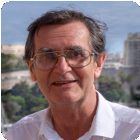 | Keith Shortridge (K&V) Keith@knaveandvarlet.com.au Keith has had many years of experience developing astronomical software, mainly for instrument control and data reduction. Having worked originally at UCL and then at Caltech, he has spent most of his career at the Australian Astronomical Observatory. He is particularly interested in the use of hardware simulation in instrument control software projects, and in ways of displaying astronomical data. Having nominally retired from AAO in 2016, he continues to work on a freelance basis, mostly on instrument control software. |
Oleg Smirnov (Rhodes University) o.smirnov@ru.ac.za Oleg holds the SKA Research Chair at Rhodes University, and also leads the Radio Astronomy Research Group at the South African Radio Astronomy Observatory (SARAO). His research interests are calibration, imaging and data handling algorithms and pipelines for radio interferometry. Before moving to South Africa in 2012, he spent most of his career at the Netherlands Institute for Radio Astronomy (ASTRON), where he was involved in projects such as AIPS++, LOFAR, and MeqTrees. |
|
| 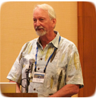 | Mark Taylor (University of Bristol) m.b.taylor@bristol.ac.uk Mark's research was originally in computational condensed-matter physics, but since late last century he has been working as a software engineer in astronomy. He worked initially on data reduction software for the UK's Starlink project, and subsequently in and out of various software projects on standards and implementations concerning data exchange and tabular data, mostly while based at the University of Bristol. He has a long involvement with the Virtual Observatory and has developed and continues to work on the TOPCAT application for manipulating tables. |
Russ Taylor (IDIA) russ@idia.ac.za Russ Taylor is the Director of the South African Inter-university Institute for Data Intensive Astronomy (IDIA), and a Professor and joint SKA Research Chair in Radio Astronomy at the University of Cape Town and the University of the Western Cape. He has been actively involved in working on data intensive challenges presented by the current and future generation of radio telescopes He is the project lead of the Ilifu data intensive cloud providing a cloud platform for processing, analytics and visualization of data from large programs on MeerKAT and other SKA pathfinder facilities . He has played a leading role on Square Kilometre Array Project since its inception, serving as founding Executive Secretary of the International Square Kilometre, Array Steering Committee, founding chair of the International SKA Science Advisory Committee, vice-chair of the International SKA Science and Engineering Committee. |
|
| 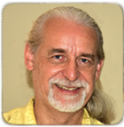 | Peter Teuben (UMD) teuben@astro.umd.edu Peter is a Principal Research Scientist at the University of Maryland. For over 30 years he has been working on radio interferometry and image analysis software and pipelines with WSRT, BIMA, CARMA, ALMA, and LMT to name a few (GIPSY, MIRIAD, CASA, LMTOY). He is also interested in simulation software, and is the maintainer of the NEMO Stellar Dynamics toolbox. More recently is has become involved in the ASCL, and now that incoming students do not know any Unix, the teaching of scientific computing using Unix. He also has a long standing involvement in ASCL, helping astronomers find codes and vice versa. |
POC Internal Pages
The ADASS Program Organizing Committee internal pages can be found here. (log-in required)